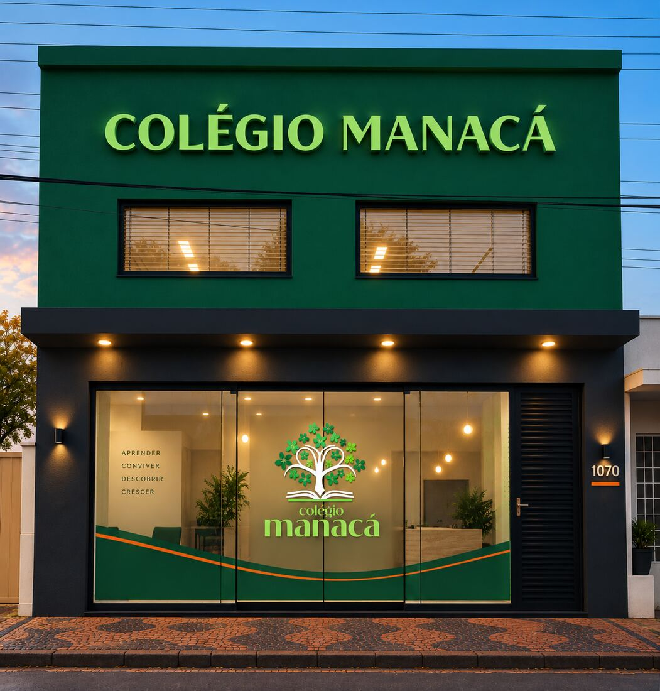
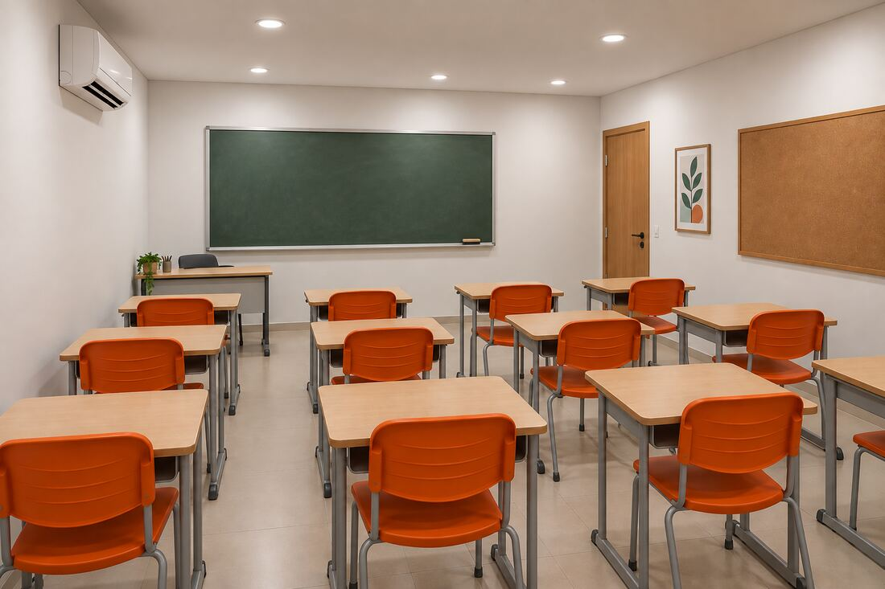
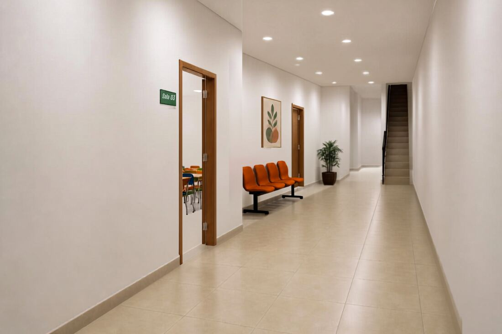
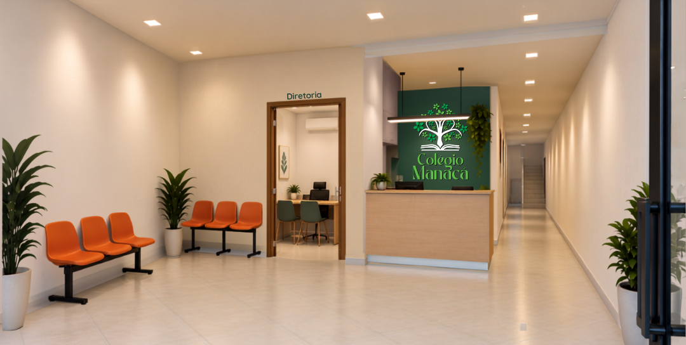
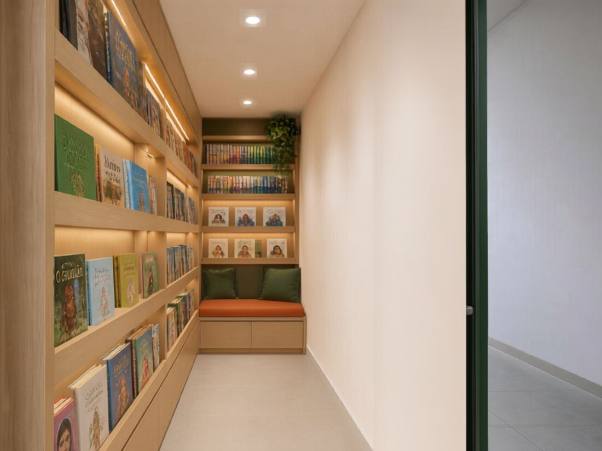
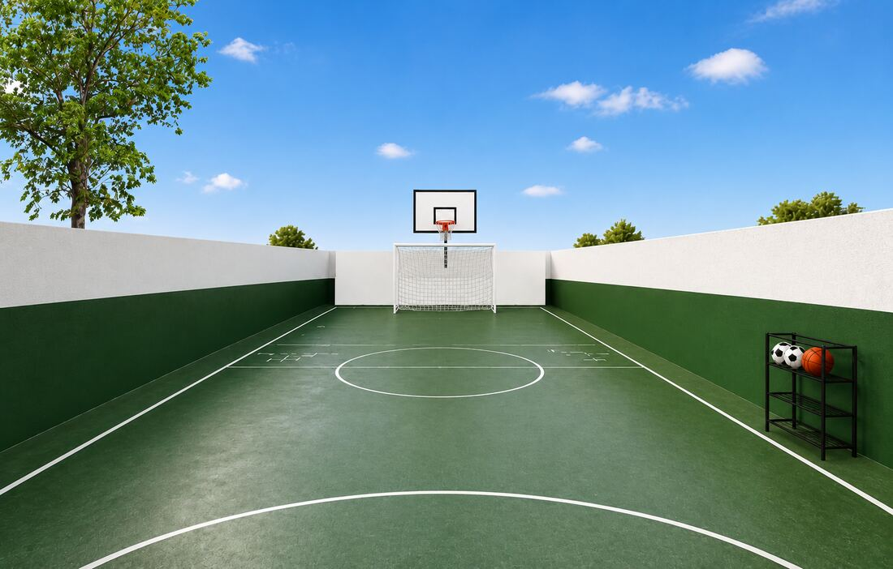

Um lugar para aprender, crescer e criar raízes.
Do 1º ao 9º ano do Ensino Fundamental, uma escola pensada para acompanhar cada etapa do desenvolvimento, unindo conhecimento, acolhimento e novas descobertas.
Uma escola para crescer por inteiro
Acreditamos que aprender vai muito além de memorizar conteúdos.
É descobrir, perguntar, experimentar, conviver e construir autonomia.
No Colégio Manacá, cada etapa do Ensino Fundamental é pensada para respeitar o desenvolvimento dos estudantes e, ao mesmo tempo, ampliar seus horizontes.
Queremos que a escola seja um espaço em que crianças e adolescentes se sintam acolhidos para aprender, seguros para perguntar e estimulados a descobrir do que são capazes.

Simulação do projeto de reforma da fachada da escola.Do 1º ao 9º ano, em uma trajetória só
A escola atende os dois segmentos do Ensino Fundamental, com propostas específicas para cada fase de desenvolvimento.
As primeiras descobertas deixam marcas para a vida toda.
Do 1º ao 5º ano, acompanhamos uma fase marcada pela curiosidade, pelas descobertas e pela construção das bases da aprendizagem.
Nossa proposta busca desenvolver leitura, escrita, raciocínio, criatividade, autonomia e convivência de maneira significativa, criando um ambiente em que aprender faça sentido e a criança possa participar ativamente desse processo.
Conheça os Anos IniciaisMais autonomia para compreender um mundo cada vez maior.
Do 6º ao 9º ano, os estudantes encontram novos desafios, aprofundam conhecimentos e começam a construir maneiras cada vez mais próprias de pensar, argumentar e tomar decisões.
O Colégio Manacá acompanha essa transformação incentivando autonomia, responsabilidade, pensamento crítico e participação ativa na aprendizagem — sem deixar de lado o acolhimento necessário em uma fase cheia de mudanças.
Conheça os Anos FinaisEspaços que também ensinam
Uma escola é feita de pessoas, mas o ambiente também faz parte da experiência de aprender. O Colégio Manacá foi pensado para oferecer espaços acolhedores, funcionais e preparados para diferentes momentos da vida escolar — da concentração em sala de aula à leitura, à convivência e ao movimento.

Salas de aula
Salas climatizadas, com lousa, mural de avisos e carteiras individuais para até 15 alunos por turma.
Simulação gerada por IA
Corredor e salas
Corredores amplos e sinalizados, com bancos de espera e acesso direto às salas e à escada.
Simulação gerada por IA
Recepção, secretaria e direção
Logo na entrada, um espaço acolhedor de atendimento às famílias, com a direção de fácil acesso.
Simulação gerada por IA
Biblioteca
Um cantinho de leitura aconchegante, com estante iluminada e assento confortável para os alunos.
Simulação gerada por IA
Quadra
Quadra poliesportiva descoberta, equipada para futebol e basquete nas aulas de educação física.
Simulação gerada por IATodas as imagens acima são simulações geradas por inteligência artificial a partir do projeto arquitetônico — os ambientes finais podem apresentar pequenas variações.
Uma escola construída com cuidado, do zero
O prédio que vai receber o Colégio Manacá era, até pouco tempo atrás, uma loja no centro de Araras. Em vez de adaptar qualquer espaço, escolhemos reformá-lo com atenção: paredes planejadas sala a sala, ventilação e iluminação pensadas para crianças, e cada ambiente desenhado para o seu uso — da diretoria à quadra.
Contamos essa história porque ela diz muito sobre como pensamos a escola: com tempo, planejamento e cuidado com os detalhes — os mesmos valores que levamos para a sala de aula.
O que queremos cultivar por aqui?
Curiosidade
Para que perguntar seja tão importante quanto encontrar respostas.
Autonomia
Para que cada estudante aprenda, aos poucos, a assumir um papel ativo em sua própria trajetória.
Conhecimento
Construído com intencionalidade, profundidade e significado, alinhado à Base Nacional Comum Curricular.
Convivência
Porque respeito, diálogo e colaboração também se aprendem.
No centro de Araras
Fácil acesso, no coração da cidade.
- Rua Tiradentes, 1070 — Centro, Araras/SP
Rua Tiradentes, 1070 — Centro, Araras/SP · ver rota no mapa
Venha crescer com o Manacá
Estamos preparando uma escola para receber novas histórias, descobertas e aprendizados. As matrículas para o Ensino Fundamental — Anos Iniciais e Anos Finais — abrem em breve. Enquanto isso, fale com a nossa equipe para conhecer a proposta e ser um dos primeiros a saber quando as vagas forem abertas.
Tenho interesse em uma vaga- Telefone / WhatsApp: (19) 3541-7706
- E-mail: colegiomanaca@gmail.com
- Rua Tiradentes, 1070 — Centro, Araras/SP
Fale com a gente pelo WhatsApp ou e-mail para saber mais sobre vagas, turmas e o funcionamento da escola.
Pode ser que você esteja se perguntando
Quais anos o Colégio Manacá atende?
Atendemos estudantes do 1º ao 9º ano do Ensino Fundamental, contemplando Anos Iniciais e Anos Finais.
Onde fica o Colégio Manacá?
Rua Tiradentes, 1070, Centro, Araras/SP — em um prédio que está sendo totalmente reformado para receber a escola.
Como posso conhecer a escola?
Entre em contato com nossa equipe para conversar sobre a proposta do Colégio Manacá e consultar as possibilidades de visita.
Como funcionam as matrículas?
As matrículas ainda não estão abertas — em breve divulgaremos as datas e as etapas do processo. Se quiser, já pode falar com a nossa equipe pelo WhatsApp ou e-mail para manifestar interesse e ser avisado assim que as vagas abrirem.